先輩後輩座談会Cross Talk
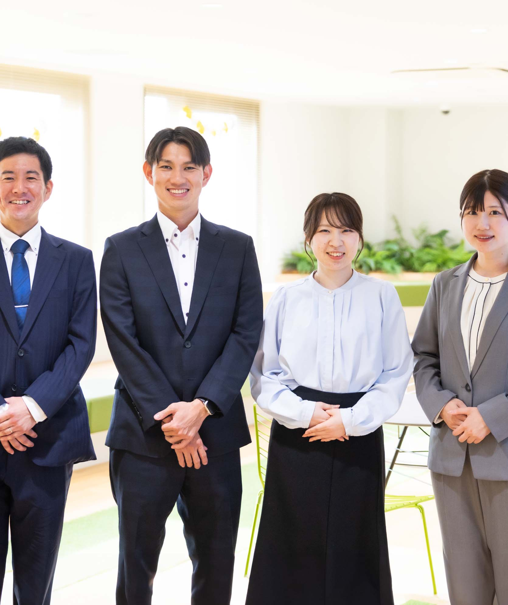
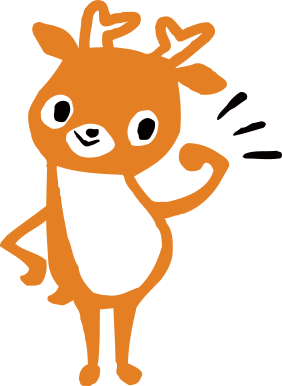
「金融機関の雰囲気や仕事内容がよくわからない」といった学生のみなさんも多いのではないでしょうか。そこで４人の若手職員と先輩職員に集まってもらい、お互いにどのように支え合って仕事に取り組んでいるのかを知っていただくために座談会を企画。地域に密着した金融機関としての仕事のやりがいから職場の雰囲気、先輩に助けてもらったエピソード、心に残った言葉などを語ってもらいました。等身大の「ならしん」をぜひ感じ取ってみてください！
Memberメンバー
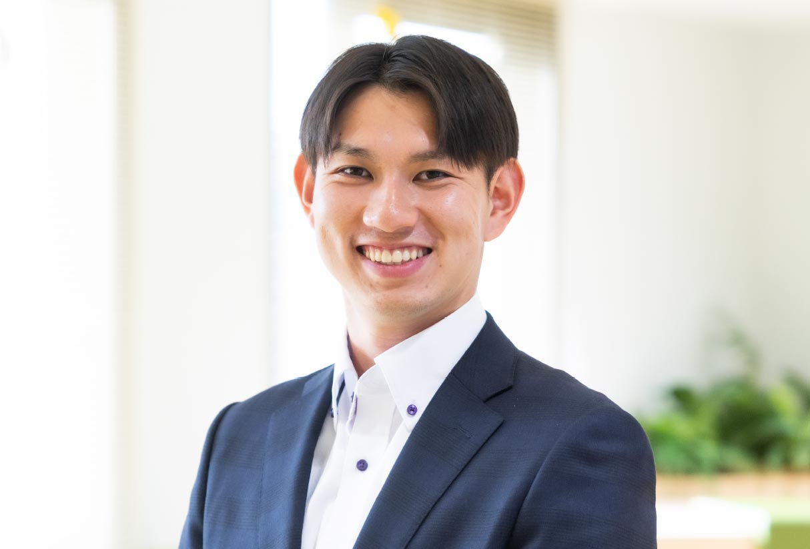
久井 一真
奈良支店 2025年入庫
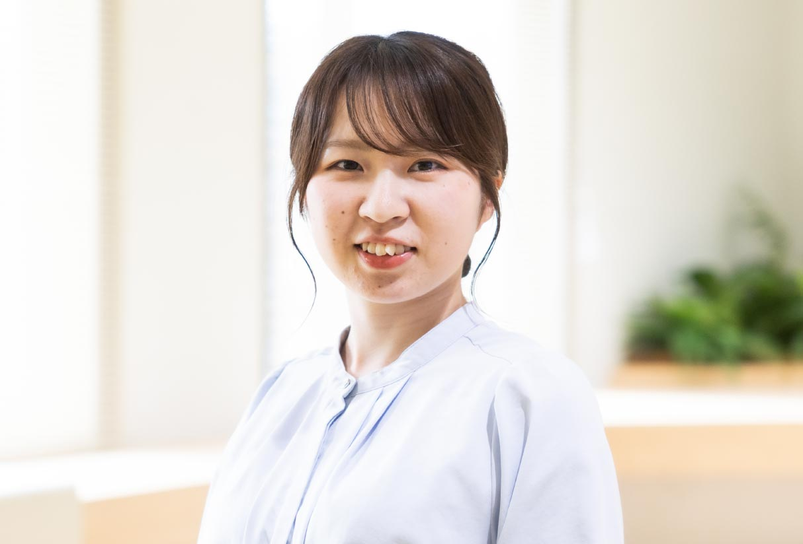
上西 葵
経営企画室 2023年入庫
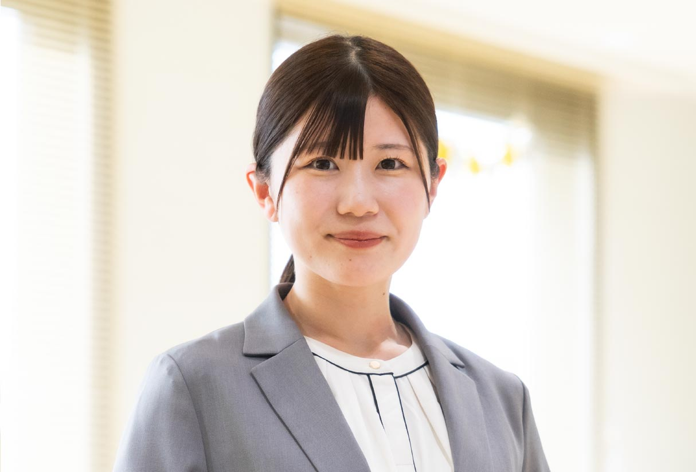
中洲 葵
こどの支店 2019年入庫
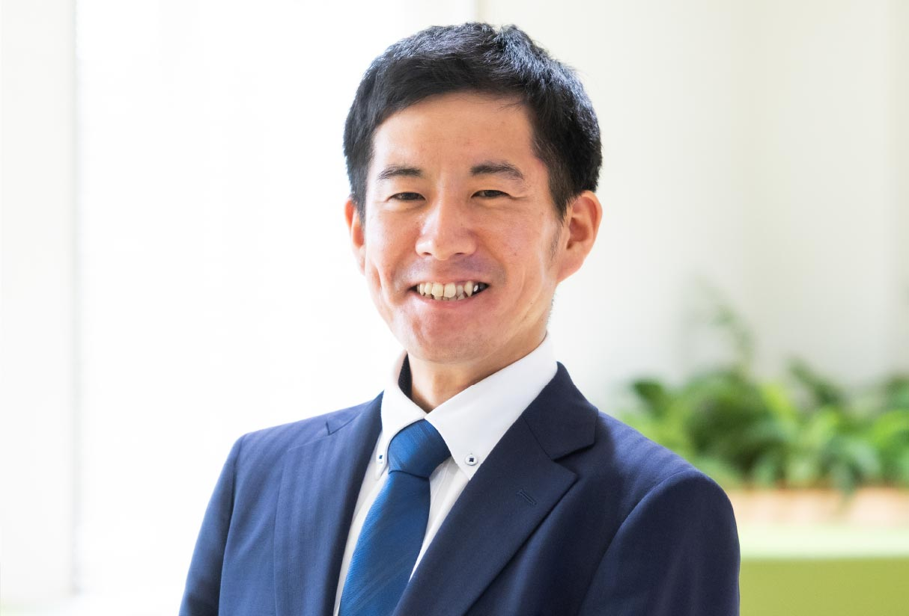
平谷 祐樹
天理支店 2017年入庫
お客さまに興味を持ち、深く知ることがより良い仕事と信頼につながる。
まずは、みなさんの仕事について
教えてください。
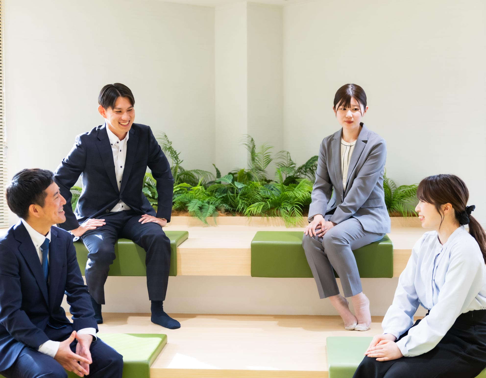

対面だからこそ、多くのお客さまとの出会いがスキルアップや喜びに。
どのような仕事のやりがいを感じていますか。
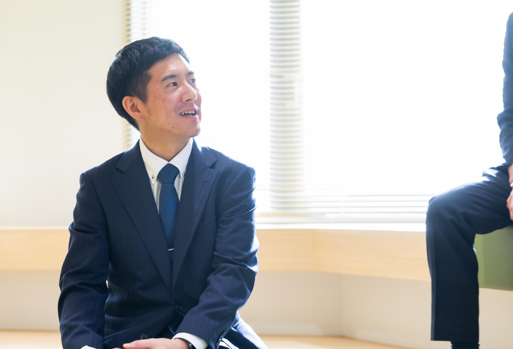
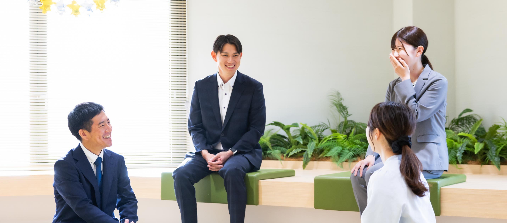
自分事としてとらえ、最後まで面倒を見てくれる先輩の優しさに感動。
先輩に助けてもらったエピソードについて教えてください。
「失敗は気にせず、何でも頼ってほしい」という先輩の言葉に励まされた。
先輩からのアドバイスで心に残っている言葉を教えてください。
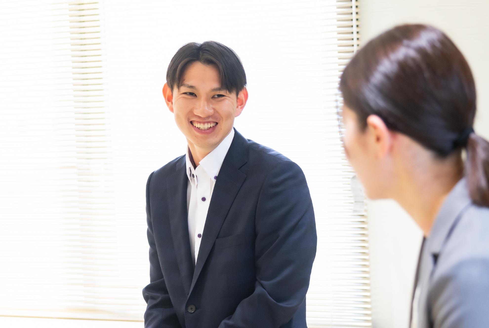
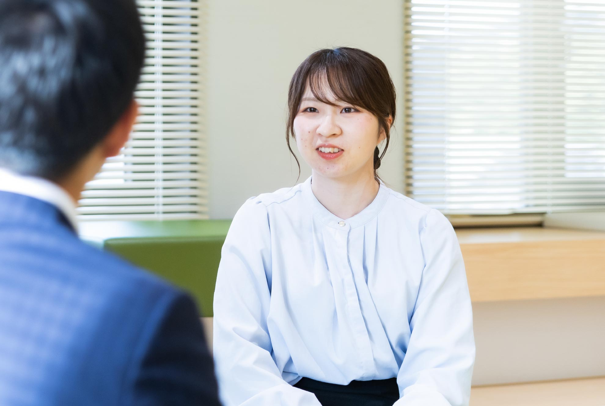